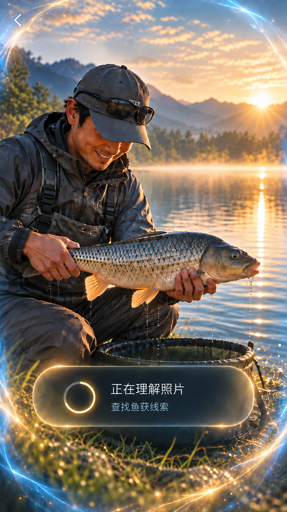
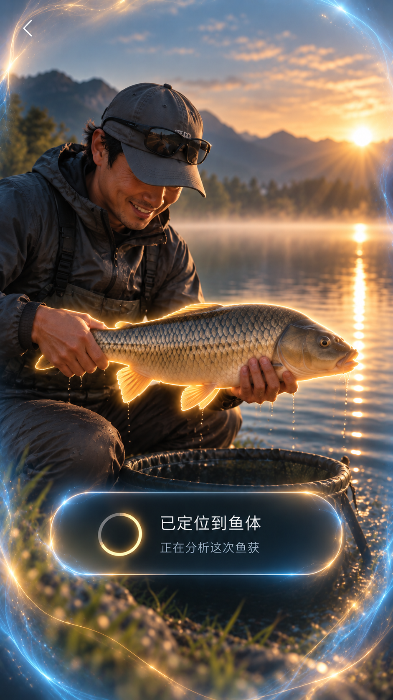
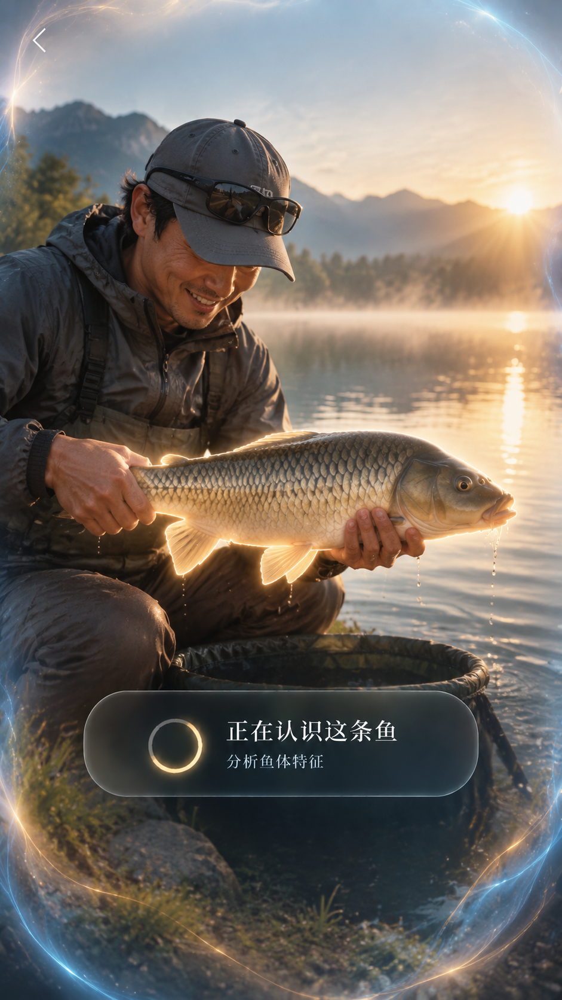

FROZEN 02 / 03 / 04 · PHOTO EDGE FIELD + FISH FOCUS
图片四周蓝金光场 · 鱼体暖金高亮
严格按 Frozen 02 / 03 分工：蓝金光场围绕照片四周的四个断开边缘岛；鱼体轮廓、柔光和光尾单独使用暖金。三张画布复用同一张原图和 1152×1536 FIT 坐标；Path 是人工参考轮廓，不代表生产 Mask。
正在核验照片来源…
WORK B · OPTICAL REVIEW
静态候选 A / B / C · 动态候选 A / B / C · 三态与 Fish Focus 来源评审
新版动态预览现已接入这个验收中心；候选仍待人工视觉选择。
打开静态 / 动态预览 →
截图与 WebM 证据
OPTICAL PRESET切换同一张照片上的光效版本Current 保留现有渲染；Enhanced 与 Frozen Match 使用四层光学结构。参数以照片实际显示宽度归一化。
VIEW 1
Original Photo
READ ONLY
仓库已登记真实鱼获照片；原始比例完整显示。
仅鱼体轮廓使用暖金；参考路径沿照片可见边缘手绘，坐标锁定原图像素。
照片四边四岛蓝金光场 · 鱼体独立暖金 Bloom/Core/Comet

02 · Understanding · 周边蓝金光场

03 · Fish Highlight · 鱼体独立暖金 Halo

04 · Identifying · 光场随状态渐变
Frozen 图保留原始字节，仅作光学质感和色彩角色参考；本页 Current / Enhanced / Frozen Match 使用上方登记的同一张测试照片。